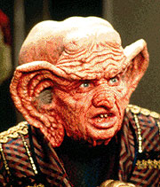
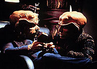

MANCHETE
DO EPISDIO
Histria
Ferengi realiza com sucesso
uma stira do crime organizado
Episdio
anterior | Prximo
episdio
Sinopse:
Data Estelar:
desconhecida.

O
grande Nagus Zek, lder da Aliana Ferengi, chega Deep
Space Nine para supervisionar a introduo da presena
comercial Ferengi no quadrante Gama.
Aproveitando a visita, Zek anuncia Quark como seu sucessor.
Durante o desenrolar da trama, ocorre tambm uma histria secundria
sobre amizades entre pessoas de culturas distintas, enfocando a
relao de Jake e Nog.
Comentrios:
"The Nagus" um exemplo de um episdio
Ferengi que funciona. A baixa qualidade dos episdios Ferengi em
geral sempre foi uma crtica recorrente srie.
O episdio tolo e inofensivo e sabe muito bem disto, no nos
forando a lembrar deste fato a cada dois minutos.
Desenvolvendo-se desta forma, ele encontra o seu prprio tom de
comdia e certamente algumas boas risadas.
Alm de dar uma "cara" sociedade Ferengi, com a
figura do Grande Nagus Zek (numa bela atuao de Shawn), este
episdio estabelece melhor do que qualquer outro anterior os
valores de sua sociedade. Para quem no sabe, em essncia, os
valores e virtudes da sociedade Ferengi so os nossos atuais vcios
e defeitos.

Aps
a suposta morte de Zek (a noo de que Ferengis mortos so
dissecados, "fatiados" e vendidos em embalagens vcuo
tambm bastante consistente com tal sociedade), Quark assume a
funo de Nagus. Nesse momento, o episdio parece tornar-se uma
stira ao crime organizado.
A noo de que Rom pode planejar a morte do prprio irmo e ao
final do episdio ter sua atitude elogiada por Quark ,
novamente, totalmente Ferengi.
Citaes:
Zek -
"You failed, miserably!"
(Voc falhou, miseravelmente!)
Trivia:
 Episdio contou com as participaes de Rom e Nog.
Episdio contou com as participaes de Rom e Nog.
Histria marcou a estria do
ator Wallace Shawn como o Grande Nagus Zek e do ator Tiny Ron como
o criado particular de Zek, Maihar'du.
Este o primeiro episdio a
apresentar uma "Regra de Aquisio" (do original
"Rule of Acquisition").
Este episdio foi originalmente chamado de "Friends and
Foes".
Neste episdio so citados pela primeira vez o "Festival da
Gratido" Bajoriano e suas "Cavernas de Fogo".
Ficha
tcnica:
Histria de David Livingston
Roteiro de Ira Steven Behr
Direo de David Livingston
Exibido em 22/03/1993
Produo: 011
Elenco:
Avery Brooks como
Benjamin Lafayette Sisko
Ren Auberjonois como Odo
Nana Visitor como Kira Nerys
Colm Meaney como Miles Edward O'Brien
Siddig El Fadil como Julian Subatoi Bashir
Armin Shimerman como Quark
Terry Farrell como Jadzia Dax
Cirroc Lofton como Jake Sisko
Elenco convidado:
Max Grodnchik como Rom
Lou Wagner como Krax
Barry Gordon como Nava
Lee Arenberg como Gral
Aron Eisenberg como Nog
Tiny Ron como Maihar'du
Wallace Shawn como Grande Nagus Zek